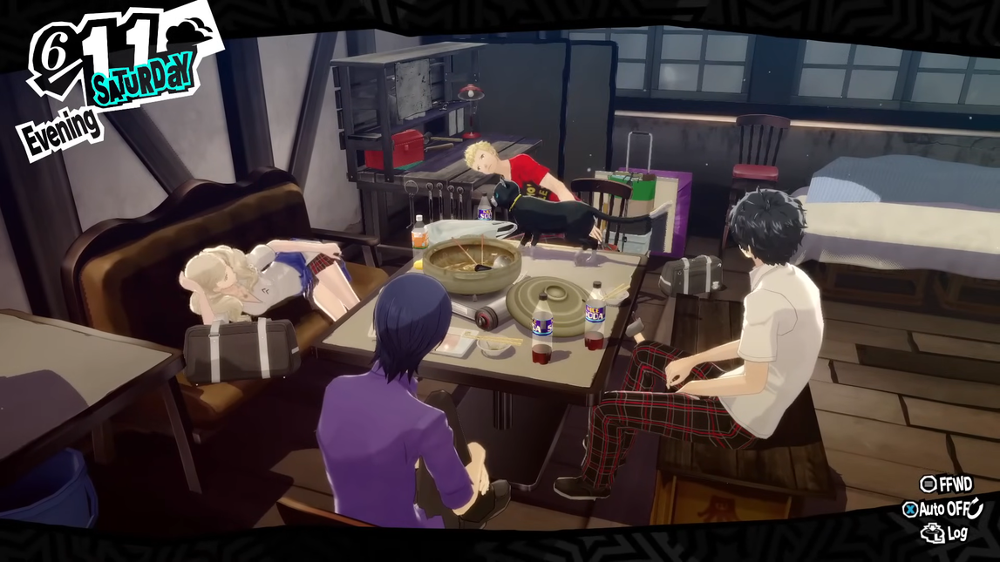

PLEASE DON'T THINK LESS OF ME FOR MY BAD TASTE IN MY MOMENT OF WEAKNESS
This review was copied from my Backloggd. You can find the original review
This review is spoiler heavy, but many sections of it are not. You can use the settings above to block out spoilers. If you choose the hover tag option, parts of this review may seem like a high clearance redacted document. If you choose to hide all spoilers, the writing may seem odd a choppy (because full segments are being removed).
Written 04/17/24
Playing Persona 5 Royal is a semi enjoyable experience. The gameplay is robust and the audiovisual experience is wonderful.
P5R does unfortunately continue ATLUS's addiction of shooting themselves in the foot and being hypocritical against what they preach. The game has interesting perceptions about the world, but they often marred by low-brow execution or throwing women under the bus every chance they get.
I gave the game 4/5 because there is something wrong with me. Objectively its a mess.
Gameplay
Just in terms of gameplay, P5R is very impressive and stunning.
P5R gets a reputation as being the most removed from SMT, but all parts of its gameplay feel like a love letter to what came before it.
It is hard to hold respect for ATLUS, but their gameplay is masterful. They implore exciting and unique mechanics, baton passes and technicals, but they still have kept their turn based core, which is very appreciated.
Demon talk being brought back is incredible. It would be great for there to be a bit more variance besides talking and hostages, but it is great to see regardless.
The Palace designs are inspired and fun to explore. The puzzles do hold the player's hand too much and it would be nice to see more complexity, but at the very least they break up the pace of exploration and do not overstay their welcome.
![A PNG image of the 20th Persona anniversary special Persona 5 box. The bottom half of the box is a solid color with logos for all the Persona games in the bottom left corner. The top half has black and white symbols and icons taken from the game. The middle of the image (and slightly to the right) has the logo for Persona 5 along with the fictional logo for the Persona 5 party. The image has a transparent background. A green and blue duotone effect was applied to the image along with a halftone effect.](../../assets/article-specific/P5R/gamebox.png)
The boss fights were great, especially the ones that play with baton passes and technicals. Demon customization, Velvet room tools, and Confidant abilities were all also stellar. One critique to give is that on the whole P5R is too easy.
It is expected from Persona, but the time management was also a standout. The Confidant abilities push the player to work towards specific goals beyond wanting to learn more about a character. Getting social stats from some Confidants also plays well into this loop. The time management system is extremely fun to break into and start minmaxing. Due to all the tools given, it is a bit too easy to max everyone out in Royal.
The story can have bumps, but being lodged into the gameplay itself is absolutely wonderful in a way that is hard to describe.
I can't be a misogynist im a good person!
The most defining moment of P5R is when Ann is telling Kamoshida off for the way he treats women and minors, and then the game transitions into the battle screen, where Ann is always positioned bending over with her ass out in the camera.
This discrepancy is only exacerbated by P5R going out of its way to let the player know that Ann is deeply uncomfortable in her thief attire
Kamoshida is a good villain, his Palace is good, and he serves to show a real problem in the world, but it is hard to take the game seriously when it is often just as bad as him.
P5R is a game where you can date nearly every woman you have a close relationship with. These women are treated with low respect and in P5R's eyes it is most important for them to appeal to the player. P5R invites the player to date numerous adults and the player character's own adoptive sister.
The game even holds similarities to Kamoshida with physical comedy about Ryuji being hurt (though these events sometimes happen due to Ryuji harassing his female friends which is an issue in its own right).
Everything Kamoshida does P5R does as well. It is upsetting for the obvious reasons, but Kamoshida is an incredible opener to P5R. His arc being marred by ATLUS's inability to be mature and respectable for once is completely disappointing.
The first arc of P5R is only further tainted by following it with an arc where Ann is repeatedly pushed to be sexually harassed by her friends. Yusuke's treatment of Ann is especially disturbing given that P5R is using Yusuke's social unawareness as a tool to harass Ann and use her as a sexual prop. Ann is the target, but Yusuke is the joke.
At the end of the Madarame arc when Joker tells Ryuji and Yusuke about his circumstances Yusuke makes a comment that the woman being harassed by Shido is partly accountable for Joker's situation.
P5R opens with a strong exploration about how people turn a blind eye to abuse women face. Within this arc reasoning is given for multiple characters about why they don't speak out or fight back against Kamoshida. Yusuke is saying something that goes completely against what the beginning of P5R was about. This would be a wonderful moment for Ryuji, or even better Ann, to discuss what they had learned and how this woman is a victim herself.

This does not happen. P5R agrees with what Yusuke is saying. Even worse, within the scene where this conversation happens, Ryuji and Morgana try to look up Ann's skirt as she is sleeping and Ryuji jokes that Ann has an affinity for older men.
When a woman is helped in P5R it is never done with honest intentions. Women are saved so the player and characters can pat themselves on the back about being upstanding men.
![An in game screenshot from Persona 5 focused on a dialogue line from Morgana. His portrait sprite is in the bottom left corner. He looks a bit upset. The dialogue at the bottom of the screen reads: 'Well, there's no way guys lounging by the pool would not check out girls in swimsuits.'. Joker, Ryuji, Yusuke, Morgana, Ann, Makoto, Haru, and Futaba are all on screen. The boy's are in their their attire while the girls are all wearing swimsuits. They are currently next to a pool on a ship. Characters behind them are sitting on lounge chairs.](../../assets/article-specific/P5R/morgana_quote_1.png)
This is made overly apparent during Shido's dungeon when Ryuji places the girl party members in a situation where they will be sexually harassed and comes in at the last moment to "save them". Ryuji and P5R get the benefit of seeing underaged girls in skimpy outfits, but they also get to save the girls and be heroes from harassment that they set up and predicted.
P5R's misogyny problems cannot go away due to how essential sexism is to the way Persona operates. Women cannot just exist in Persona. Women cannot just be friends, teachers, or sisters, they must all fit into the dating simulation format; and they must all secretly want you no matter what. It's frustrating. As the protagonist, you are always effortlessly perfect, wanted, and irresistible.
This is all disgusting, most importantly, but P5R cannot exist as a serious and complex story if it completely tramples over the ground it just tended.
Telling and showing and telling again
The hypocrisy is the worst issue, but overall the game can be a bit low-brow with its discussions.
P5R is more talented than anything else at building up future plot points. It is an exciting game to play as you constantly have a list in your head of events you know are going to happen and with each in game week these events become more exciting.
![An in game screenshot from Persona 5 focused on a dialogue line from Ann Takamaki. Her portrait sprite is in the bottom left corner. She looks dejected. The dialogue at the bottom of the screen reads: 'The one clinging to her mother would be Futaba-chan, right?'. Ann, Joker, Ryuji, and Yusuke are on screen. They are currently looking at a paiting that is styled after ancient Egyptian art. The painting shows a young Futaba (wearing ancient Egyptian clothing) pulling on the bottom of her mother's shirt to get her attention. Her mother is about to sit down at her computer's desk.](../../assets/article-specific/P5R/ann_quote_3.png)
The payoff itself ranges in quality. Futaba's arc is nearly perfect, but it lacks grace. In Futaba's Palace, each mural describing her life is described to you by the characters. The game places low faith in the player being able to figure out what happened on their own.
When you hear about a character doing bad things through a Mementos request, all of the characters reinstate multiple times why what the person is doing is wrong. Throughout the game the NPC's are just portrayed as a mindless mass that follows along with trends and populist figures. These are minor points, but P5R can be strongly crafted. Seeing these weak points shatters the illusion.
Moreover, the lack of complexity with the NPC's makes P5R's stance in its vanilla ending weak. Yaldabaoth views the people in the world as a mindless mass. P5R rejects this, but it has been touting the same viewpoint whether it be intentional or not.
For a game about justice, P5R also carries a simplistic view on the matter. The villains are painted as complete monsters with no heart, but they get reformed without any true work on their end. Having Akechi voice this problem and actually question the Thieves' sense of justice was great, but the game itself fails to go deeply into all of this. Which is unfortunate since it could have added really interesting complexity to the game.
P5R is full of unfortunate issues that bar it from being as good as it could have been. This is upsetting as it can be a fun narrative experience. The game is strong at setting a pattern, but it also knows how to try out different structures. This is most apparent with the different introductions to the party members.
As mentioned the build up is great, the drama is always wonderful. October to November is a highlight of the game. P5R is firing on all cylinders and the player is starting to reach the payoff for numerous events. This part of the game is so well crafted that it makes the mediocrity of what follows even more apparent.
11/21 is P5R's writing low-point. Akechi is a great character. He's a perfect twist villain, though it doesn't feel right calling him that because the point of Akechi Goro is that you are supposed to know. P5R's is a game about waiting for the other shoe to drop with multiple people and story beats, Akechi is the height of that. Talking to Akechi is all about waiting for the moment when they're going to drop the character portrait where he has sharp teeth and hazy eyes.
Despite being a character you go in thinking that you know everything, he still manages to surprise by not being a sudden face-heel turn villain; he is telling you too much at every corner. Akechi is always just a couple words away from revealing it all when you would expect a character like him to play dumb.
Many parts of P5R feel like a reflection of SMT's and Persona's history. Akechi is a wonderful follow up to Ikutsuki and Adachi. After years of uninspired Persona twist characters this is incredible. P5R does not realize this. ALUS does not know how to operate without a “twist”.
P5R purposely leaves out things that the main characters were doing and saying, just so it can come back later and rub it in the players' face as some kind of well thought out and exciting twist. It's bad form to spend a sizeable amount of time detailing events and actions the characters did off screen, especially for a game like P5R where the main character is a classic self insert. This section of the game is cheap and annoying.
The plot does pick back up. Although Yaldabaoth was slightly weak, the engine room scenes and the Persona classic “look at all your friends supporting you” scenes were all strong. After a wonderful stretch from October to November, though, it is incredibly disappointing and it does prevent the game from being as good as it could have been.
Overall
To move onto general notes the characters are good in P5R. There can be upsetting missteps (mostly in the arcs for the female characters), but on the whole each character brings out an important discussion point within P5R. Tying the Confidants to Mementos was also an incredible call.
The uniqueness of each Confidant is deeply appreciated, especially given that in some Persona games the Confidants consist mostly of classmates. P5R's addiction to teenager-adult relationships does make this a double edged sword, though.
Akechi stands out in the cast as he is a necessary character for P5R to work. He exists well as a person who has done wrong but is still sympathetic and is sign of what the Phantom Thieves of Hearts work to prevent.
Each Phantom Thief could have been Akechi. A party wide foil elevates the story, and the party itself, deeply. It would have been incredible to see this complexity extended to more antagonistic characters besides Akechi (and Maruki).
Throughout Persona's history the more complex antagonistic characters have been responded to with chastising and telling the antagonist that they are the way they are because they don't have friends. Akechi's treatment falls into similar pitfalls, but P5R is a step in the right direction as it explores a bit deeper into why Akechi is the way he is.
On a minor (and reading a bit too into it all) note, Akechi's character being defined as a person who is jealous of Joker is honestly genius for a game series like Persona.
Persona bends over backwards to give its silent main characters all the love and luxury that they can get. It is tragic that all Joker has to do is stand around to be loved while Akechi's insecurities have crushed every chance of companionship he's had. This is not explored to its potential (as Persona wants to avoid bringing attention to the fact it is an extreme power fantasy), but this is an aspect of the game I enjoy regardless.
Third Semester
![An image from the bad ending of Persona 5 Royal. Every party member is standing together for a group photo. They all look happy. The back row is (left to right): Akechi, Morgana (who is in his human form), Joker, Ryuji (who is making two peace signs), and Yusuke. The front frow is (left to right): Ann, Haru, Makoto, Futaba, and Sumire. Makoto and Haru are both holding diplomas and have a single rose on their chests. The dialogue box at the bottom has the text 'Say cheese...' and is spoken by 'Man Wearing Hat'.](../../assets/article-specific/P5R/bad_ending.png)
Third Semester was incredible. There is nothing new that can possibly be added to that conversation. Maruki, Sumire, and Akechi are all given a shocking amount of complexity compared to the writing of the base game.
Tacking on a whole extra segment to the end of a video game after the resolution is always going to be messy. It does not fit into P5R perfectly, but Third Semester is about being the final ending of a Persona game. Third Semester is about being with your friends forever and never letting anything end.
The one negative that sticks out is ATLUS's inability to take risks.
The limited party sections and your other party member's delusions should have lasted for much longer. That would have added a challenge to the end of the game and further push the dreadful feeling of losing your friends.
The start of Third semester has an incredible, uncomfortable malaise wrapped around it. Getting to live in that atmosphere for longer would be highly appreciated.
Concluding Thoughts
Persona 5 Royal feels like a game where the pen was passed between the writer of a generation and genuinely one of the most foul people ever: this up and down in the quality of writing makes it an absolutely addictive game to think about.
The gameplay is incredible, and the high moments are wonderful, but there is nothing more aggravating than a Persona game during its many low points.
Credits
I scanned the 20th anniversary game box image!
(Most) screenshots and quotes were taken from
"I guess the only way is... havin' you go nude." "The woman sounds quite horrible as well. She's stayed quiet this whole time..." Ryuji and Morgana looking up Ann's skirt (she's probably only tired in this scene so they can pull this "gag" its honestly insane) "You convinced him, didn't you? You go, Miss Older-Dude-Charmer!" "Well, there's no way guys lounging by the pool would not check out girls in swimsuits." "The one clinging to her mother would be Futaba-chan, right?" "The new Shido administration will pull us out of this reccession and renew our economy."
Notes
1 Ryuji does clarify that he thinks Ann should do everything in her power to not actually have to get naked, but Ryuji and Morgana are pushing Ann to be alone in a room with a man who has borderline harassed and stalked her. They are also giving this man an expectation that she will be naked. This is not a situation anyone should put a person in.